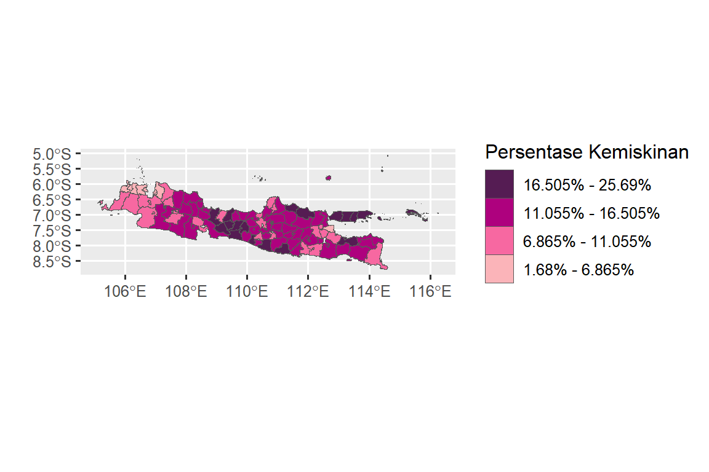
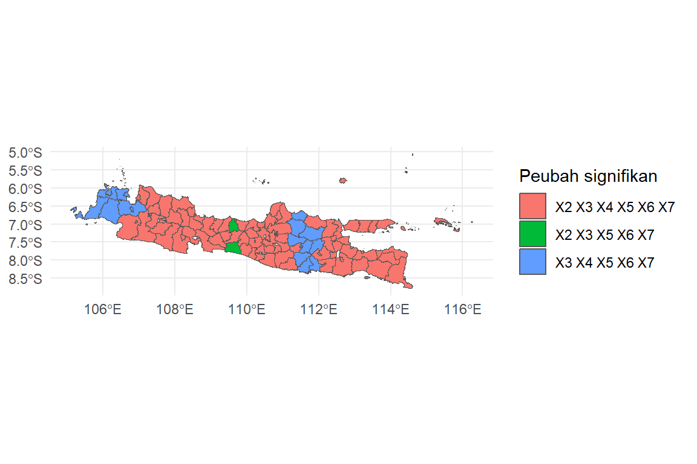

library(car) # Untuk menghitung nilai VIF
library(spdep) # Untuk pemodelan dependensi spasial
library(spatialreg) # Untuk pemodelan dependensi spasial
library(lmtest) # Untuk pengujian asumsi
library(ggplot2) # Untuk visualisasi data
library(classInt) # Untuk membuat selang nilai
library(spgwr) # Untuk membentuk model GWR4 Regresi Terboboti Geografis
4.1 Data
Ilustrasi RTG dirujuk dari hasil penelitian Hujjah A (2020). Data yang digunakan dalam penelitian bersumber dari Badan Pusat Statistik (BPS) pada 118 kabupaten/kota di Pulau Jawa tahun 2015. Peubah respon dalam penelitian ini adalah persentase penduduk miskin kabupaten/kota di Pulau Jawa, sedangkan prediktor yang digunakan selengkapnya tertera Tabel 4.1. Data dan peta selengkapnya dapat diakses pada tautan https://ipb.link/gwr.
| Kode | Peubah |
|---|---|
| \(Y\) | Persentase penduduk miskin (%) |
| \(X_1\) | PDRB (Milyar) |
| \(X_2\) | Persentase masyarakat tamat SD kebawah (%) |
| \(X_3\) | Angka melek huruf (%) |
| \(X_4\) | Pengeluaran perkapita (%) |
| \(X_5\) | Banyak rumah tangga penerima raskin (%) |
| \(X_6\) | Penduduk kelompok umur 15-64 (%) |
| \(X_7\) | Harapan lama sekolah (tahun) |
4.2 Tahapan Analisis Data
Tahapan analisis yang digunakan untuk mencapai tujuan dari penelitian ini adalah sebagai berikut:
-
Menentukan Pola Hubungan:
- Menentukan pola hubungan antara prediktor dengan peubah respon menggunakan plot pencaran.
- Menyeleksi prediktor dengan menggunakan Variance Inflation Factor (VIF).
-
Uji Efek Spasial:
- Uji Lagrange Multiplier (LM) untuk mengetahui efek dependensi spasial.
- Uji Breusch-Pagan (BP) untuk mengetahui efek keragaman spasial.
-
Menentukan Model RTG:
- Menentukan nilai lebar jendela optimum pada kernel normal tetap dan adaptif berdasarkan nilai Cross Validation (CV) yang minimum.
- Menduga Parameter RTG dengan metode kuadrat terkecil terboboti.
- Menguji kebaikan model RTG dengan melakukan uji F.
- Menentukan kebaikan model berdasarkan nilai koefisien determinasi (\(R^2\)) dan AIC.
-
Pemeriksaan Asumsi pada Sisaan RTG:
- Pemeriksaan sisaan, yaitu sisaan menyebar normal, bersifat homogenan, dan independen.
-
Interpretasi Koefisien RTG:
- Interpretasi koefisien RTG dengan menggunakan peta.
4.3 Tahapan Analisis Data dengan R
Untuk komputasi RTG, berikut daftar package yang diinstall:
Package
Input Data
Input data dilakukan dengan syntax berikut:
#Set Lokasi File
#Input Data
miskin <- read.csv('data/data_kemiskinan_2015.csv')
miskin$Wilayah <- toupper(miskin$Nama.Wilayah)
#
#Input peta SHP
IDN <- read_sf("data/shp/jawa.shp")
#
#Menggabungkan Data ke file SHP
sf_use_s2(FALSE)
#> Spherical geometry (s2) switched off
gabung = merge(IDN, miskin, by.x = "KABKOT", by.y = "Wilayah",
all.x = F, all.y = F)
longlat=st_coordinates(st_centroid(gabung))
#> Warning: st_centroid assumes attributes are constant over
#> geometries
#> Warning in st_centroid.sfc(st_geometry(x), of_largest_polygon =
#> of_largest_polygon): st_centroid does not give correct centroids
#> for longitude/latitude data
head(gabung)
#> Simple feature collection with 6 features and 16 fields
#> Geometry type: MULTIPOLYGON
#> Dimension: XY
#> Bounding box: xmin: 107 ymin: -8.03 xmax: 113 ymax: -6.69
#> Geodetic CRS: WGS 84
#> KABKOT PROVNO KABKOTNO PROVINSI ID2013
#> 1 BANDUNG 32 04 JAWA BARAT 3204
#> 2 BANDUNG 32 73 JAWA BARAT 3273
#> 3 BANDUNG BARAT 32 17 JAWA BARAT 3217
#> 4 BANGKALAN 35 26 JAWA TIMUR 3526
#> 5 BANJARNEGARA 33 04 JAWA TENGAH 3304
#> 6 BANTUL 34 02 DAERAH ISTIMEWA YOGYAKARTA 3402
#> Nama.Wilayah Longitude Latitude Y X1 X2 X3 X4 X5
#> 1 Bandung 108 -7.13 8.0 24.2 15.25 100.0 57.7 55.7
#> 2 Bandung 108 -7.13 8.0 24.2 15.25 100.0 57.7 55.7
#> 3 Bandung Barat 107 -6.87 12.7 20.9 7.92 100.0 60.5 60.6
#> 4 Bangkalan 113 -7.04 22.6 20.1 43.29 86.6 62.0 22.2
#> 5 Banjarnegara 110 -7.38 18.4 17.6 34.74 97.5 58.8 67.5
#> 6 Bantul 110 -7.92 16.3 19.9 32.46 97.9 49.1 43.7
#> X6 X7 geometry
#> 1 66.1 12.1 MULTIPOLYGON (((108 -6.81, ...
#> 2 66.1 12.1 MULTIPOLYGON (((108 -6.86, ...
#> 3 65.2 11.4 MULTIPOLYGON (((108 -6.73, ...
#> 4 64.9 11.6 MULTIPOLYGON (((113 -6.89, ...
#> 5 66.3 11.4 MULTIPOLYGON (((110 -7.2, 1...
#> 6 69.0 14.7 MULTIPOLYGON (((110 -7.77, ...Eksplorasi Data
Eksplorasi data yang dilakukan meliputi pemeriksaan mulitkolinearitas dan pemetaan nilai persentase penduduk miskin. Pemeriksaan multikolinearitas dilakukan dengan syntax berikut:
Nilai VIF dari semua prediktor berkisar antara 1.34 sampai 3.62, sehingga disimpulkan tidak terdapat multikolinearitas.
Untuk membuat peta data persentase kemiskinan, data lebih dulu dikelompokan dalam 4 (empat) kelas interval menggunakan style = ’kmeans. Syntax untuk membuat kelas interval sebagai berikut:
#Membuat kelas interval data kemiskinan
classIntervals(gabung$Y, n = 4, style = 'kmeans')
#> style: kmeans
#> one of 82,160 possible partitions of this variable into 4 classes
#> [5.09,9.71) [9.71,13.2) [13.2,17.9) [17.9,25.7]
#> 23 42 24 14Berdasarkan nilai selang nilai tersebut, data kemiskinan dipetakan (Gambar 4.1) dengan menggunakan syntax sebagai berikut:
#Peta kemiskinan
cc <- c('#fbb4b9', '#f768a1', '#ae017e', '#551c53')
plot.miskin = ggplot(data=gabung) +
geom_sf(aes(fill = cut(Y, breaks = c(1.68, 6.865, 11.055,
16.505, 25.69))), lwd = 0) +
scale_fill_manual("Persentase Kemiskinan", values = cc,
labels = c("1.68% - 6.865%", "6.865% - 11.055%",
"11.055% - 16.505%", "16.505% - 25.69%"),
guide = guide_legend(reverse = T))+ xlab("") +ylab("")
plot.miskin

Uji Efek Spasial
- Membentuk matriks pembobot spasial
Pada ilustrasi ini digunakan matriks pembobot spasial KNN dengan K = 3 dengan syntax sebagai berikut:
#Membuat matriks bobot K-NN
k<-knearneigh(longlat, k=3, longlat = TRUE)
k1<-knn2nb(k)
klist<-nb2listw(k1)
klist
#> Characteristics of weights list object:
#> Neighbour list object:
#> Number of regions: 103
#> Number of nonzero links: 309
#> Percentage nonzero weights: 2.91
#> Average number of links: 3
#> Non-symmetric neighbours list
#>
#> Weights style: W
#> Weights constants summary:
#> n nn S0 S1 S2
#> W 103 10609 103 60.8 429- Uji Lagrange Multiplier
Pengujian efek dependensi spasial dengan menggunakan uji Lagrange Multiplier menggunakan syntax sebagai berikut:
#Uji LM dan RLM
lmtestmod <- lm.LMtests(model, klist, zero.policy = T,
test = "all")
#> Please update scripts to use lm.RStests in place of lm.LMtests
summary(lmtestmod)
#> Rao's score (a.k.a Lagrange multiplier) diagnostics for
#> spatial dependence
#> data:
#> model: lm(formula = Y ~ X1 + X2 + X3 + X4 + X5 + X6 + X7,
#> data = gabung)
#> test weights: listw
#>
#> statistic parameter p.value
#> RSerr 19.39 1 1.1e-05 ***
#> RSlag 18.66 1 1.6e-05 ***
#> adjRSerr 1.82 1 0.18
#> adjRSlag 1.09 1 0.30
#> SARMA 20.48 2 3.6e-05 ***
#> ---
#> Signif. codes: 0 '***' 0.001 '**' 0.01 '*' 0.05 '.' 0.1 ' ' 1Hasil uji LMlag, LMerr, RLMerr, dan SARMA memiliki nilai-p yang lebih kecil dari α=0.05. Untuk menentukan efek dependensi pada data cukup diperhatikan pada hasil uji robustLM yang nyata pada α=0.05. Berdasarkan hasil uji RLM dapat disimpulkan terdapat dependensi spasial pada galat.
- Uji Breusch-Pagan
Uji Breusch-Pagan digunakan untuk mengidentifikasi adanya keheterogenan spasial. Syntax uji ini sebagai berikut:
#Uji Breusch-Pagan
bptest(model)
#>
#> studentized Breusch-Pagan test
#>
#> data: model
#> BP = 13, df = 7, p-value = 0.06Nilai-p uji Breusch-Pagan lebih kecil dari α=0.05, sehingga dapat disimpulkan bawa terdapat keragaman spasial pada data. Hasil butir (2b) dan (2c) menunjukkan bahwa pada data yang digunakan mengandung efek dependensi pada galat dan efek keragaman. Pada ilustrasi ini, efek dependensi diabaikan dan hanya memperhatikan efek keragaman spasial. Model yang digunakan untuk menangani keragaman spasial adalah regresi terboboti geografis (RTG).
Melakukan pendugaan parameter RTG
- Menentukan nilai lebar jendela optimum
Lebar jendela dari fungsi kernel dapat bersifat adaptif atau tetap. Penentuan lebar jendela optimum menggunakan validasi silang (CV). Untuk menentukan lebar jendela tetap pada fungsi kernel Gaussian menggunakan syntax sebagai berikut:
#Mengubah class data PDRB menjadi class SpatialPointsDataFrame
miskin.sp <- miskin
coordinates(miskin.sp) <- c('Longitude', 'Latitude')
#
#Menentukan nilai bandwidth fixed gaussian
bw1 <- gwr.sel(Y ~ X1 + X2 + X3 + X4 + X5 + X6 + X7,
data = miskin.sp,longlat = T, adapt = F)
#> Bandwidth: 381 CV score: 1321
#> Bandwidth: 616 CV score: 1371
#> Bandwidth: 236 CV score: 1311
#> Bandwidth: 213 CV score: 1315
#> Bandwidth: 285 CV score: 1305
#> Bandwidth: 322 CV score: 1308
#> Bandwidth: 285 CV score: 1305
#> Bandwidth: 284 CV score: 1305
#> Bandwidth: 284 CV score: 1305
#> Bandwidth: 284 CV score: 1305
#> Bandwidth: 284 CV score: 1305
#> Bandwidth: 284 CV score: 1305
#> Bandwidth: 284 CV score: 1305
#> Bandwidth: 284 CV score: 1305
bw1
#> [1] 284Untuk menentukan lebar jendela adaptif pada fungsi kernel Gaussian menggunakan syntax sebagai berikut:
#Menentukan lebar jendela adaptive gaussian
bw2 <- gwr.sel(Y ~ X1 + X2 + X3 + X4 + X5 + X6 + X7,
data = miskin.sp,longlat = T, adapt = T)
#> Adaptive q: 0.382 CV score: 1306
#> Adaptive q: 0.618 CV score: 1331
#> Adaptive q: 0.236 CV score: 1329
#> Adaptive q: 0.424 CV score: 1309
#> Adaptive q: 0.373 CV score: 1307
#> Adaptive q: 0.393 CV score: 1307
#> Adaptive q: 0.383 CV score: 1306
#> Adaptive q: 0.379 CV score: 1306
#> Adaptive q: 0.381 CV score: 1306
#> Adaptive q: 0.381 CV score: 1306
#> Adaptive q: 0.381 CV score: 1306
#> Adaptive q: 0.381 CV score: 1306
#> Adaptive q: 0.381 CV score: 1306
#> Adaptive q: 0.381 CV score: 1306
#> Adaptive q: 0.381 CV score: 1306
#> Adaptive q: 0.381 CV score: 1306
#> Adaptive q: 0.381 CV score: 1306
bw2
#> [1] 0.381- Menduga parameter RTG
Pendugaan parameter RTG dengan matriks pembobot kernel Gaussian yang bersifat tetap dilakukan dengan menggunakan syntax berikut:
#Pendugaan parameter RTG Fixed Gaussian
modgwr1 <- gwr(Y ~ X1 + X2 + X3 + X4 + X5 + X6 + X7,
data = miskin.sp,bandwidth=bw1, hatmatrix=TRUE)
modgwr1
#> Call:
#> gwr(formula = Y ~ X1 + X2 + X3 + X4 + X5 + X6 + X7, data = miskin.sp,
#> bandwidth = bw1, hatmatrix = TRUE)
#> Kernel function: gwr.Gauss
#> Fixed bandwidth: 284
#> Summary of GWR coefficient estimates at data points:
#> Min. 1st Qu. Median 3rd Qu. Max. Global
#> X.Intercept. 71.64250 71.64291 71.64336 71.64368 71.64419 71.64
#> X1 -0.00227 -0.00227 -0.00227 -0.00227 -0.00227 0.00
#> X2 -0.00880 -0.00880 -0.00880 -0.00880 -0.00880 -0.01
#> X3 -0.46262 -0.46262 -0.46262 -0.46261 -0.46261 -0.46
#> X4 0.02389 0.02391 0.02393 0.02394 0.02396 0.02
#> X5 0.10363 0.10363 0.10363 0.10364 0.10364 0.10
#> X6 -0.33893 -0.33892 -0.33892 -0.33891 -0.33890 -0.34
#> X7 0.12023 0.12024 0.12024 0.12025 0.12026 0.12
#> Number of data points: 118
#> Effective number of parameters (residual: 2traceS - traceS'S): 8
#> Effective degrees of freedom (residual: 2traceS - traceS'S): 110
#> Sigma (residual: 2traceS - traceS'S): 3.21
#> Effective number of parameters (model: traceS): 8
#> Effective degrees of freedom (model: traceS): 110
#> Sigma (model: traceS): 3.21
#> Sigma (ML): 3.1
#> AICc (GWR p. 61, eq 2.33; p. 96, eq. 4.21): 622
#> AIC (GWR p. 96, eq. 4.22): 610
#> Residual sum of squares: 1137
#> Quasi-global R2: 0.603Pendugaan parameter RTG dengan matriks pembobot kernel Gaussian yang bersifat adaptif dilakukan dengan menggunakan syntax berikut:
#Pendugaan parameter RTG Adaptive Gaussian
modgwr2 <- gwr(Y ~ X1 + X2 + X3 + X4 + X5 + X6 + X7,
data = miskin.sp,adapt=bw2, hatmatrix=TRUE)
modgwr2
#> Call:
#> gwr(formula = Y ~ X1 + X2 + X3 + X4 + X5 + X6 + X7, data = miskin.sp,
#> adapt = bw2, hatmatrix = TRUE)
#> Kernel function: gwr.Gauss
#> Adaptive quantile: 0.381 (about 44 of 118 data points)
#> Summary of GWR coefficient estimates at data points:
#> Min. 1st Qu. Median 3rd Qu. Max.
#> X.Intercept. 23.363476 35.135103 44.598202 49.628117 66.066298
#> X1 -0.008387 -0.004279 -0.000960 0.000148 0.001057
#> X2 -0.046471 -0.013779 0.014497 0.044178 0.075466
#> X3 -0.443799 -0.342696 -0.233574 -0.196681 -0.140880
#> X4 -0.183275 -0.119927 0.144968 0.336282 0.442372
#> X5 0.036957 0.047140 0.086035 0.155074 0.172139
#> X6 -0.435163 -0.379993 -0.344504 -0.317770 -0.280135
#> X7 0.073159 0.290455 0.473494 0.701423 0.878044
#> Global
#> X.Intercept. 71.64
#> X1 0.00
#> X2 -0.01
#> X3 -0.46
#> X4 0.02
#> X5 0.10
#> X6 -0.34
#> X7 0.12
#> Number of data points: 118
#> Effective number of parameters (residual: 2traceS - traceS'S): 18.6
#> Effective degrees of freedom (residual: 2traceS - traceS'S): 99.4
#> Sigma (residual: 2traceS - traceS'S): 2.89
#> Effective number of parameters (model: traceS): 15.3
#> Effective degrees of freedom (model: traceS): 103
#> Sigma (model: traceS): 2.85
#> Sigma (ML): 2.66
#> AICc (GWR p. 61, eq 2.33; p. 96, eq. 4.21): 604
#> AIC (GWR p. 96, eq. 4.22): 581
#> Residual sum of squares: 832
#> Quasi-global R2: 0.709Untuk menampilkan 5 baris pertama dari koefisien RTG menggunakan syntax sebagai berikut:
#Koefisien RTG Fixed Gaussian
hasil <-as.data.frame(modgwr1$SDF)
head(hasil[,2:9])
#> X.Intercept. X1 X2 X3 X4 X5 X6 X7
#> 1 71.6 -0.00227 -0.0088 -0.463 0.0239 0.104 -0.339 0.12
#> 2 71.6 -0.00227 -0.0088 -0.463 0.0239 0.104 -0.339 0.12
#> 3 71.6 -0.00227 -0.0088 -0.463 0.0239 0.104 -0.339 0.12
#> 4 71.6 -0.00227 -0.0088 -0.463 0.0239 0.104 -0.339 0.12
#> 5 71.6 -0.00227 -0.0088 -0.463 0.0239 0.104 -0.339 0.12
#> 6 71.6 -0.00227 -0.0088 -0.463 0.0239 0.104 -0.339 0.12#Koefisien RTG Adaptive Gaussian
hasil2 <-as.data.frame(modgwr2$SDF)
head(hasil2[,2:9])
#> X.Intercept. X1 X2 X3 X4 X5 X6 X7
#> 1 45.8 -0.001199 0.03794 -0.198 -0.157 0.160 -0.332 0.537
#> 2 52.5 0.000552 0.00476 -0.288 -0.101 0.150 -0.280 0.266
#> 3 47.8 0.000808 0.00865 -0.234 -0.122 0.157 -0.284 0.296
#> 4 47.1 0.000849 0.00899 -0.227 -0.123 0.157 -0.284 0.299
#> 5 48.0 0.000806 0.00829 -0.237 -0.120 0.156 -0.283 0.294
#> 6 48.6 0.000770 0.00784 -0.244 -0.118 0.155 -0.283 0.290Untuk menampilkan ringkasan koefisien RTG menggunakan syntax sebagai berikut:
#Membuat fungsi ringkasan RTG fixed Gaussian
summarycoef <- function(x, data){
min <- round(min(data[,x]),6)
q1 <- round(quantile(data[,x], probs = 0.25),6)
med <- round(quantile(data[,x], probs = 0.50),6)
mean <- round(mean(data[,x]),6)
q3 <- round(quantile(data[,x], probs = 0.75),6)
max <- round(max(data[,x]),6)
variance <- round(var(data[,x]),6)
ran <- round(max - min,6)
iqr <- round(IQR(data[,x]),6)
mat <- matrix(c(min, q1, med, mean, q3, max, variance, ran,
iqr), ncol = 1)
colnames(mat) <- x
return (as.data.frame(mat))
}
#
# Ringkasan Koefisien RTG Fixed Gaussian
ringkasan <- data.frame(matrix(c("Min", "Q1", "Median", "Mean",
"Q3", "Max", "Variance", "Range", "IQR"), ncol = 1))
colnames(ringkasan) <- "Statistics"
for(i in 2:9){
sumkoef <- summarycoef(colnames(hasil)[i], hasil)
ringkasan <- cbind(ringkasan, sumkoef)
}
ringkasan
#> Statistics X.Intercept. X1 X2 X3 X4
#> 1 Min 7.16e+01 -0.002271 -8.8e-03 -0.462624 0.023894
#> 2 Q1 7.16e+01 -0.002271 -8.8e-03 -0.462619 0.023909
#> 3 Median 7.16e+01 -0.002271 -8.8e-03 -0.462616 0.023927
#> 4 Mean 7.16e+01 -0.002271 -8.8e-03 -0.462616 0.023924
#> 5 Q3 7.16e+01 -0.002271 -8.8e-03 -0.462613 0.023938
#> 6 Max 7.16e+01 -0.002270 -8.8e-03 -0.462609 0.023956
#> 7 Variance 0.00e+00 0.000000 0.0e+00 0.000000 0.000000
#> 8 Range 1.69e-03 0.000001 5.0e-06 0.000015 0.000062
#> 9 IQR 7.69e-04 0.000000 2.0e-06 0.000006 0.000029
#> X5 X6 X7
#> 1 0.103625 -0.338932 1.2e-01
#> 2 0.103630 -0.338922 1.2e-01
#> 3 0.103634 -0.338917 1.2e-01
#> 4 0.103634 -0.338916 1.2e-01
#> 5 0.103639 -0.338908 1.2e-01
#> 6 0.103644 -0.338901 1.2e-01
#> 7 0.000000 0.000000 0.0e+00
#> 8 0.000019 0.000031 2.9e-05
#> 9 0.000009 0.000014 1.2e-05#Ringkasan Koefisien RTG adaptif Gaussian
ringkasan2 <- data.frame(matrix(c("Min", "Q1", "Median", "Mean",
"Q3", "Max", "Variance", "Range", "IQR"), ncol = 1))
colnames(ringkasan2) <- "Statistics"
for(i in 2:9){
sumkoef <- summarycoef(colnames(hasil2)[i], hasil2)
ringkasan2 <- cbind(ringkasan2, sumkoef)
}
ringkasan2
#> Statistics X.Intercept. X1 X2 X3 X4
#> 1 Min 23.4 -0.008387 -0.04647 -0.44380 -0.183
#> 2 Q1 35.1 -0.004279 -0.01378 -0.34270 -0.120
#> 3 Median 44.6 -0.000960 0.01450 -0.23357 0.145
#> 4 Mean 43.5 -0.002045 0.01570 -0.26842 0.119
#> 5 Q3 49.6 0.000148 0.04418 -0.19668 0.336
#> 6 Max 66.1 0.001057 0.07547 -0.14088 0.442
#> 7 Variance 119.3 0.000007 0.00135 0.00838 0.051
#> 8 Range 42.7 0.009444 0.12194 0.30292 0.626
#> 9 IQR 14.5 0.004427 0.05796 0.14602 0.456
#> X5 X6 X7
#> 1 0.03696 -0.43516 0.0732
#> 2 0.04714 -0.37999 0.2905
#> 3 0.08604 -0.34450 0.4735
#> 4 0.09889 -0.34959 0.4844
#> 5 0.15507 -0.31777 0.7014
#> 6 0.17214 -0.28014 0.8780
#> 7 0.00253 0.00216 0.0561
#> 8 0.13518 0.15503 0.8049
#> 9 0.10793 0.06222 0.4110Berdasarkan output ringkasan koefisien RTG terlihat nilai rataan koefisien X7 bernilai positif tertinggi pada kedua model (RTG dengan lebar jendela tetap dan adaptif). Untuk koefisien yang bernilai negatif terendah, terlihat X3 pada model dengan lebar jendela tetap dan X6 pada model adaptif. Ragam koefisien untuk model tetap Gaussian cenderung lebih rendah dibandingkan model adaptif Gaussian. Berdasarkan nilai IQR pada kedua model terlihat koefisien X4 memiliki nilai yang lebih tinggi dibandingkan koefisien lainnya, hal ini menunjukan bahwa koefisien X4 pada setiap kabupaten/kota di Jawa lebih beragam dibandingkan koefisien prediktor lainnya.
- ANOVA
Untuk membandingkan kebaikan antara model regresi linier berganda dengan RTG, digunakan perbandingan kuadrat tengah antara kedua model dengan analisis ragam (ANOVA). Berikut syntax yang digunakan untuk menampilkan ANOVA dan nilai-p dari statistik uji F:
#ANOVA RTG Fixed Gaussian
round(anova(modgwr1), 4)
#> Analysis of Variance Table
#> Df Sum Sq Mean Sq F value
#> OLS Residuals 8.0e+00 1137
#> GWR Improvement 9.0e-04 0 37.3
#> GWR Residuals 1.1e+02 1137 10.3 3.61
#
#Nilai p
pf(3.6086, 0.0009,109.9991, lower.tail = F)
#> [1] 0.00263
#
#ANOVA RTG Adaptive Gaussian
round(anova(modgwr2), 4)
#> Analysis of Variance Table
#> Df Sum Sq Mean Sq F value
#> OLS Residuals 8.0 1137
#> GWR Improvement 10.6 304 28.62
#> GWR Residuals 99.4 832 8.38 3.42
#
#Nilai p
pf(3.418, 10.64, 99.36, lower.tail = F)
#> [1] 0.000546Nilai-p dari statistik uji F lebih kecil dari α=0.05, sehingga dapat disimpulkan bahwa model RTG mempunyai kuadrat tengah galat lebih kecil dari pada model regresi linier berganda.
- Evaluasi kebaikan RTG
Untuk mengetahui kebaikan model antara regresi linier berganda dengan RTG, selain menggunakan ANOVA (butir 3d), dapat juga dibandingkani nilai AIC dan R-square kedua model tersebut. Syntax untuk menghitung nilai AIC dan R-square sebagai berikut:
#Nilai AIC dan R-square
regsum <- summary(model)
eval <- data.frame(matrix(c('Regresi Linear', 'RTG Fixed Gaussian', 'RTG Adaptive Gaussian', AIC(model),
modgwr1$results$AICh, modgwr2$results$AICh,
regsum$r.squared, (1 -(modgwr1$results$rss/
modgwr1$gTSS)), (1 - (modgwr2$results$rss/
modgwr2$gTSS))), ncol = 3, byrow = F))
colnames(eval) <- c('Model', 'AIC', 'R-square')
eval$`R-square` <- as.numeric(eval$`R-square`)*100
eval$AIC <- as.numeric(eval$AIC)
eval
#> Model AIC R-square
#> 1 Regresi Linear 552 41.3
#> 2 RTG Fixed Gaussian 610 60.3
#> 3 RTG Adaptive Gaussian 581 70.9Berdasarkan nilai AIC dan R-Square, model RTG adaptif dibandingkan model regresi linier dan RTG tetap memiliki AIC terkecil dan R-square terbesar. Sehingga disimpulkan bahwa model RTG adaptif merupakan model terbaik untuk memodelkan data kemiskinan.
Uji asumsi model RTG terbaik
Uji asumsi pada sisaan RTG meliputi uji normalitas, homogenitas ragam, dan kebebasan sisaan. Untuk uji normalitas menggunakan uji Shapiro-Wik dengan syntax sebagai berikut:
#Uji Normalitas
sisaan<-modgwr2$SDF$gwr.e
shapiro.test(sisaan)
#>
#> Shapiro-Wilk normality test
#>
#> data: sisaan
#> W = 1, p-value = 0.05Hasil uji normalitas menunjukkan statistik uji Shapiro-Wilk mempunyai nilai-p> α=0.05, sehingga disimpulkan sebaran sisaan dapat dihampiri dengan sebaran normal.
Uji homogenitas sisaan menggunakan uji Breusch-Pagan, dan hasil uji menunjukkan p-value = 0.04612< α=0.05, sehingga dapat disimpulkan sisaan bersifat heterogen. Nilai-p dari uji B-P sisaan sudah lebih kecil dibandingkan pada model yaitu sebesar p-value = 0.00542. Dengan demikian dapat disimpulkan Model RTG mampu mengatasi heterogenitas.
Uji kebebasan sisaan dilakukan menggunakan uji indeks Moran pada sisaan untuk mengetahui apakah ada autokorelasi spasial pada sisaan. Hasil uji Moran mempunyai p-value = 0.7293, sehingga dapat disimpulkan tidak terdapat autokorelasi spasial antar sisaan RTG.
# Uji Autokorelasi Galat
gwr.morantest(modgwr2, klist)Uji signifikansi parameter pada tiap lokasi amatan
Parameter dari model RTG pada tiap kabupaten/kota di Jawa diuji menggunakan uji t-student dengan syntax sebagai berikut:
#Uji T untuk koefisien RTG
miskin.sp$X1.pval <- abs(modgwr2$SDF$X1) -2*modgwr2$SDF$X1_se
miskin.sp$X1.kesimpulan <- ifelse(miskin.sp$X1.pval > 0 , 1,0)
miskin.sp$X2.pval <- abs(modgwr2$SDF$X2) -2*modgwr2$SDF$X1_se
miskin.sp$X2.kesimpulan <- ifelse(miskin.sp$X2.pval > 0 , 1,0)
miskin.sp$X3.pval <- abs(modgwr2$SDF$X3) -2*modgwr2$SDF$X1_se
miskin.sp$X3.kesimpulan <- ifelse(miskin.sp$X3.pval > 0 , 1,0)
miskin.sp$X4.pval <- abs(modgwr2$SDF$X4) -2*modgwr2$SDF$X1_se
miskin.sp$X4.kesimpulan <- ifelse(miskin.sp$X4.pval > 0 , 1,0)
miskin.sp$X5.pval <- abs(modgwr2$SDF$X5) -2*modgwr2$SDF$X1_se
miskin.sp$X5.kesimpulan <- ifelse(miskin.sp$X5.pval > 0 , 1,0)
miskin.sp$X6.pval <- abs(modgwr2$SDF$X6) -2*modgwr2$SDF$X1_se
miskin.sp$X6.kesimpulan <- ifelse(miskin.sp$X6.pval > 0 , 1,0)
miskin.sp$X7.pval <- abs(modgwr2$SDF$X7) -2*modgwr2$SDF$X1_se
miskin.sp$X7.kesimpulan <- ifelse(miskin.sp$X7.pval > 0 , 1,0)
#
# Mengelompokkan peubah yang signifikan dari setiap wilayah
strings <- c()
for(i in 1:nrow(miskin.sp)){
strings[i] <- ""
if(miskin.sp$X7.kesimpulan[i]==1) {strings[i] <- paste("X7",
strings[i])}
if(miskin.sp$X6.kesimpulan[i]==1) {strings[i] <- paste("X6",
strings[i])}
if(miskin.sp$X5.kesimpulan[i]==1) {strings[i] <- paste("X5",
strings[i])}
if(miskin.sp$X4.kesimpulan[i]==1) {strings[i] <- paste("X4",
strings[i])}
if(miskin.sp$X3.kesimpulan[i]==1) {strings[i] <- paste("X3",
strings[i])}
if(miskin.sp$X2.kesimpulan[i]==1) {strings[i] <- paste("X2",
strings[i])}
if(miskin.sp$X1.kesimpulan[i]==1) {strings[i] <- paste("X1",
strings[i])}
if(strings[i] == "") {strings[i] <- "Tidak ada"}
}
miskin.sp$Peubah_Signifikan <- strings
as.matrix(summary(as.factor(miskin.sp$Peubah_Signifikan)))
#> [,1]
#> X2 X3 X4 X5 X6 X7 89
#> X2 X3 X5 X6 X7 2
#> X3 X4 X5 X6 X7 27Output hasil uji t menunjukkan prediktor yang signifikan dan banyaknya kabupaten/kota yang masuk dalam kategorinya. Prediktor X1 tidak nyata pada semua kabupaten/kota di Jawa. Untuk memudahkan mengetahui kabupaten/kota sesuai kategori peubah yang nyata disajikan dalam peta. Syntax yang digunakan untuk membuat peta sebagai berikut:
#Peta koefisien RTG
Peubah <- cbind(miskin.sp$Wilayah, miskin.sp$Peubah_Signifikan)
colnames(Peubah) <- c("Wilayah", "Peubah_Signifikan")
gabung <- merge(gabung, Peubah, by.x = "KABKOT", by.y =
"Wilayah")
ggplot(gabung) +
aes(fill = Peubah_Signifikan) +
geom_sf(size = 0.05) +
scale_fill_hue(direction = 1) +
labs(fill = "Peubah signifikan")+
theme_minimal()
Dari peta terlihat mayoritas kabupaten/kota di Jawa berwarna merah, menunjukkan prediktor X2 sampai X7 berpengaruh nyata. Beberapa kabupate/kota di bagian barat Provinsi Jawa Barat dan bagian tengah Provinsi Jawa Timur berwarna biru yang menunjukkan prediktor X1 dan X4 tidak nyata.